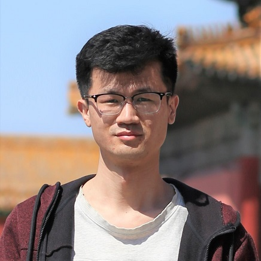

Chongyang Xu 许崇杨
xu DOT chongyang AT outlook DOT com
Ph.D. student
Network and Cloud Systems Research Group
Max-Planck-Institut für Informatik
Address:
Max-Planck-Institut für Informatik
Saarland Informatics Campus
Campus E1 4
66123 Saarbrücken
Location: E1 4 - 527
[ About Me ] [ Publications ] [ Projects ] [ Honors and Awards ] [ Short Bio ]
About Me
I'm a Ph.D student at Max Planck Institute for Informatics (MPI-INF), working with Yiting Xia, starting from June 2022.
I got my B.E. degree from School of Software, Shandong University in 2017. I received my M.S. degree from School of Computer Science & Engineering, Beihang University in 2020. Until May 2022, I worked as a software engineer for Intel's Image Processing Unit 6.
I'm interested in Cloud systems and Networks. I'm also interested in parallel computing and graph systems.
Publications
[DBLP]
Publications before 2020:
- Multiple Algorithms Against Multiple Hardware Architectures : Data-Driven Exploration on Deep Convolution Neural Network [paper]
Chongyang Xu, Zhongzhi Luan, Lan Gao, Rui Wang, Han Zhang, Lianyi Zhang, Yi Liu and Depei Qian
[NPC 2019: The 16th Annual IFIP International Conference on Network and Parallel Computing], Hohhot, China, Aug 2019.
- Towards a General and Efficient Linked-List Hash Table on GPUs [paper]
Lan Gao,Yunlong Xu, Chongyang Xu, Rui Wang, Hailong Yang, Zhongzhi Luan and Depei Qian
[HPCC 2019: The 21st IEEE International Conference on High Performance Computing and Communications], Zhangjiajie, China, Aug 2019.
- Accelerating Lattice QCD on Sunway Many-Core Processor [paper]
Zengxiao Zhang, Zhongzhi Luan, Chongyang Xu, Ming Gong and Shun Xu
[ISPA 2018: 16th IEEE International Symposium on Parallel and Distributed Processing with Applications], Melbourne, VIC, Australia, Dec 2018.
Projects
- Parallel Hoeffding Tree on GPU [abstract]
- Distributed Graph Query, a rephrased [introduction]
Honors and Awards
- Dean's Scholarship, School of Software, Shandong University, 2017
- National Scholarship, Shandong University, 2015
Short Bio
Chongyang Xu is a Ph.D. student at Max Planck Institute for Informatics (MPI-INF) starting from June 2022, his supervisor is Yiting Xia. Until May 2022, he worked at Intel as a software engineer. Before that, he receieved M.S. degree and B.E. degree from Beihang University in 2020 and from Shandong University in 2017, respectively.